помощник
помощник
помощник
Субтитры: Русские и Английские | 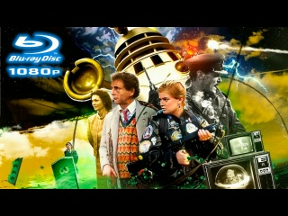 |
|---|---|
с обновленными спецэффектами Субтитры: Русские и Английские | 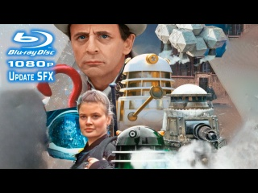 |
Расширенная с обновленными спецэффектами Субтитры: Русские и Английские | 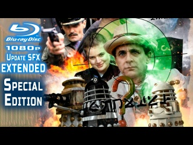 |
Remembrance of the Daleks
Дата выхода: 5-26 октября 1988
Формат: 4 эпизода по 25 мин.
| помощник | помощник | помощник |
Лондон, 1963 год. Доктор и Эйс прибывают в Шордич, где две фракции далеков — имперские и перебежчики — сражаются за Руку Омеги, могущественный артефакт Повелителей Времени, спрятанный Доктором на Земле ещё в его первом воплощении. На стороне людей — военная группа подполковника Гилмора и учёные Рейчел Дженсен и Эллисон Уильямс.
Открывающая 25-й сезон — серия, задуманная как прямое продолжение первой серии «Доктора Кто» 1963 года. Бен Ааронович, автор сценария, позже напишет серию романов «Реки Лондона». Знаменитая сцена, где Эйс избивает далека бейсбольной битой, стала визитной карточкой персонажа. А аудио спин-офф «Контр-Меры» от Big Finish продолжил приключения Гилмора, Рейчел и Эллисон.
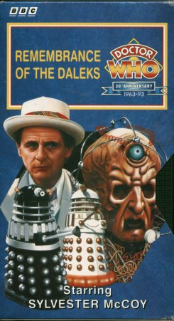 VHS - сентябрь 1993 | 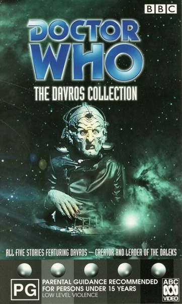 VHS+Boxset - сентябрь 2001 |
|---|---|
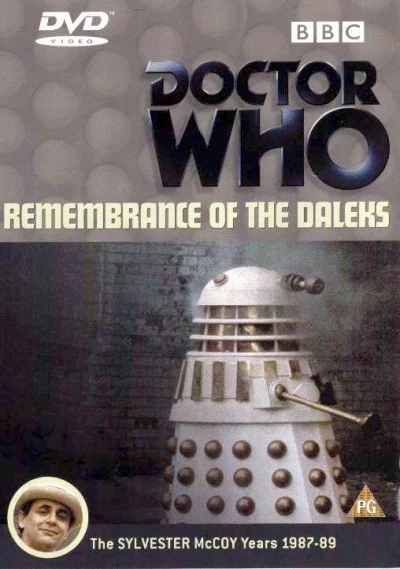  DVD+Boxset - 26 февраля 2001 | 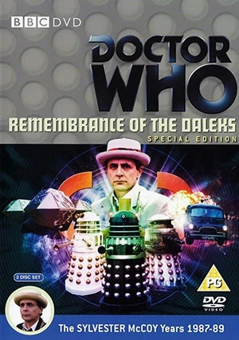 DVD-SE - 20 июля 2009 |
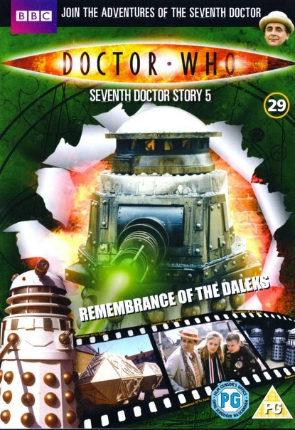 DVD - 3 февраля 2010 |  Blu-ray - 28 октября 2024 * Версия в нашей группе |
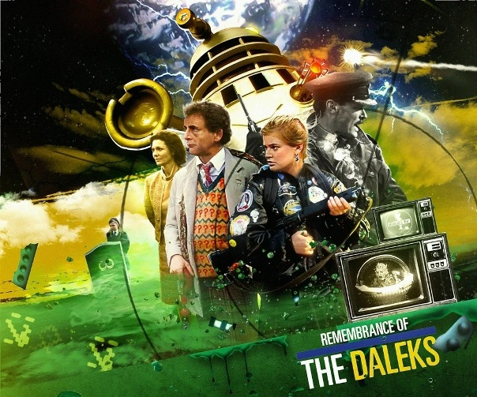
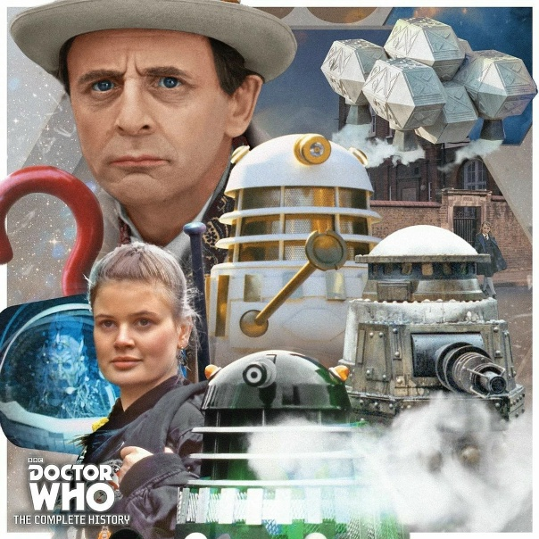
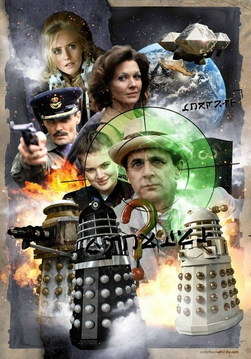
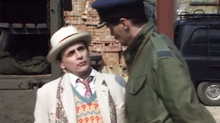